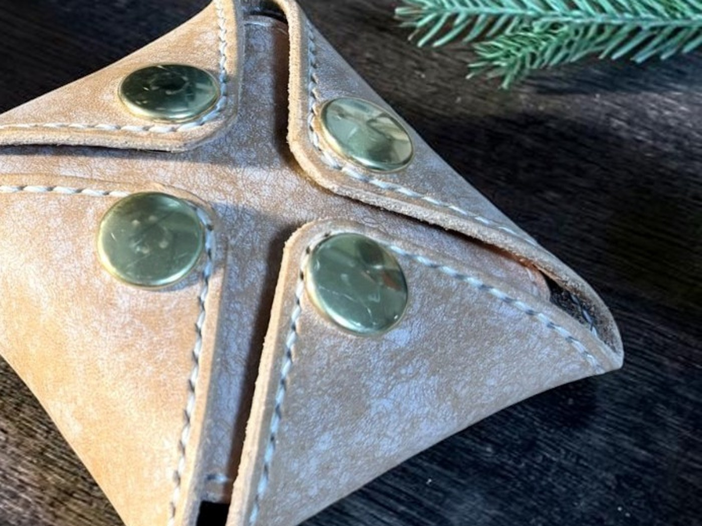
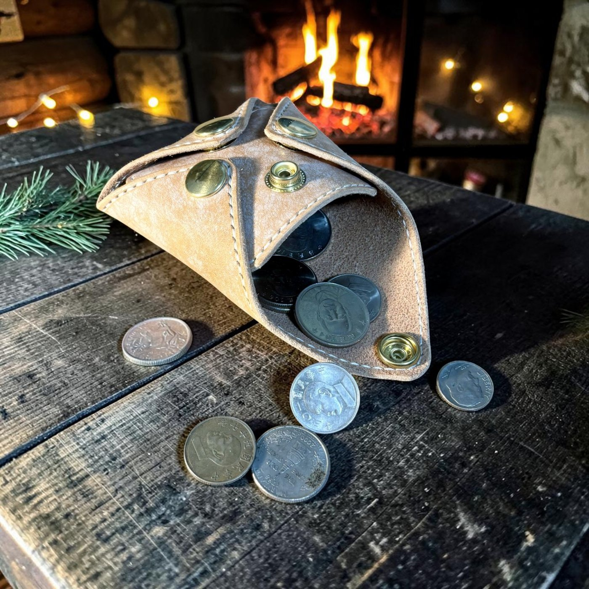
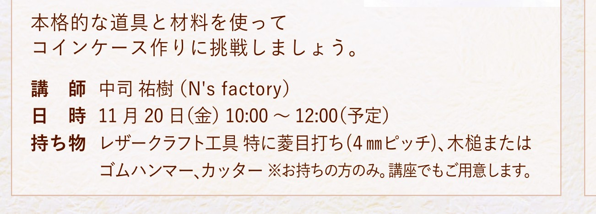
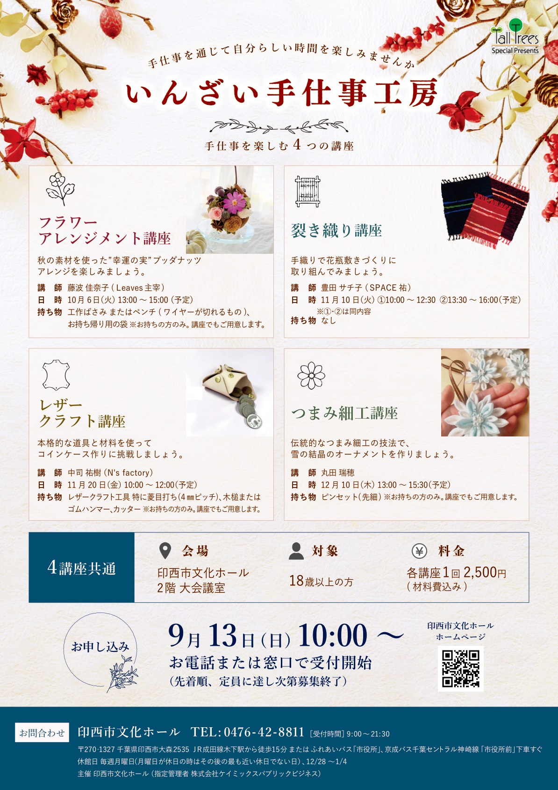

Overview
開催概要
| 日時 | 2026年11月20日（金）10:00〜12:00（予定） |
|---|---|
| 会場 | 印西市文化ホール 2階 大会議室 〒270-1327 千葉県印西市大森2535 |
| 作るもの | スクエアコインケース（約8×8×2cm・牛ヌメ革・ボタン4点留め） |
| 参加費 | 2,500円（材料費込み） |
| 対象 | 18歳以上の方 |
| 定員 | 10名（先着順・定員に達し次第 募集終了） |
| 講師 | 中司 祐樹（N's factory） |
| 申込受付 | 2026年9月13日（日）10:00〜 印西市文化ホールの電話または窓口にて受付 |
| 主催 | 印西市文化ホール（指定管理者：株式会社ケイミックスパブリックビジネス） |
Work
作る作品
四隅をボタンで留めると四角い箱の形になり、開くと平らに広がるコインケースです。 小銭が一目で見渡せて取り出しやすく、革の質感がそのまま手に残ります。 講座では牛ヌメ革（肌色）をご用意します。使い込むほどに色が深く育っていく革です。


Process
当日の流れ
型紙に沿って革を切り出すところから始めます。すべての工程を体験していただきます。
1
革の切り出し
型紙を革に写し、カッターで切り出します。まっすぐ切るコツからお伝えします。
2
穴あけ
縫い穴とボタン穴を開けます。菱キリとポンチを使う、革ならではの作業です。
3
ボタン取り付け
ハンドプレス機で4か所のボタンを留めます。カチッと決まる瞬間が気持ちのいい工程です。
4
仕上げ
コバ（革の断面）を整えて完成です。そのままお持ち帰りいただけます。
Tools
使用する道具
道具はすべて会場でご用意します。手ぶらでお越しいただいて問題ありません。 革工芸のご経験があり道具をお持ちの方は、ご持参いただけると作業がよりスムーズに進みます。
会場でご用意するもの
お持ちでない方はこちらをお使いいただけます
- カッター・カッターマット革を切り出すのに使います
- 菱キリ縫い穴を開ける、先の尖った錐です
- ゴム板穴を開けるときの下敷きです
- 穴あけポンチボタン用の丸穴を開けます
- 木槌・ゴムハンマーポンチを叩いて穴を開けます
- ハンドプレス機・駒ボタンを留める機械です（講師が持参します）
- 革・ボタン金具参加費に含まれています
お持ちの方はご持参ください
任意です。お持ちでなくてもご参加いただけます
- 菱目打ち（4mmピッチ）等間隔の縫い穴が一度に開けられます
- 木槌またはゴムハンマー
- カッター
Flyer
チラシ
印西市文化ホールが発行するシリーズ共通のチラシです。 レザークラフト講座のほか、フラワーアレンジメント・裂き織り・つまみ細工の全4講座が掲載されています。


申込受付開始 2026年9月13日（日）10:00〜
お申し込みは印西市文化ホールへ
お電話または窓口にて受付いたします（先着順・定員10名）
0476-42-8811
受付時間 9:00〜21:30／休館日 毎週月曜日（月曜が休日の場合はその後の最も近い休日でない日）
お申し込みは印西市文化ホールが受け付けています。
N's factory では本講座のお申し込み・キャンセルの受付はしておりません。
お申し込みに関するお問い合わせは、上記の文化ホールへ直接ご連絡ください。
作品や材料についてのご質問は、N's factory へお気軽にお問い合わせください。
作品や材料についてのご質問は、N's factory へお気軽にお問い合わせください。